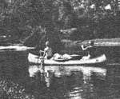

Most folks who visit Florida end up seeing little more than crowded beaches and overpriced tourist attractions. However, as MOTHER-reader Leslie Justis reminds us, the few who take to canoes and venture onto that state's rivers and streams are rewarded by an unhurried view of the region's abundant natural beauty.
"As you quietly slip along the surface of the cool, clean, and often rapidly flowing waterways," writes Leslie, "great white and brown birds soar above the cypress trees, and sleepy turtles sunbathe atop craggy stumps, seemingly oblivious to your presence."
To find out more about the unspoiled areas of the Sunshine State, write to the Florida Department of Natural Resources (Dept. TMEN, Crown Building, Tallahassee, Florida 32304) and ask for the "Guide to Florida Canoe Trails", which describes some 35 beautiful, primitive rivers and streams.
The good folks there will also send you a list of outfits that rent river-running equipment. For example, Canoe Outposts (Dept. TMEN, Route 1, Box 29, High Springs, Florida 32643) will furnish you with a Grumman canoe, paddles, and life jackets for as little as $5.00 per person for a half-day . . . or all of the camping equipment (including a canoe) necessary for a 2-1/2-day trip for $35 per person, and Outposts will even provide guide service if you like.
The late U Thant, former Secretary-General of the United Nations, made a plea-during a "Conference on Human Survival" held at the UN-that people, regardless of their nationality, try to feel "a second allegiance to the world community as a whole". As a result, Planetary Citizens was organized, in 1974, to help men and women realize that they can no longer afford to live only as citizens of isolated nations, set apart from the needs and lives of folks in other lands.
Anyone anywhere in the world may, without charge, register as a Planetary Citizen. Those who do are permanently listed and receive identification cards, newsletters, and suggestions on what they-as individuals-can do to contribute to the solution of world problems. (At present, approximately 200,000 persons in 50 countries have joined the organization.)
Additionally, for a fee of $15 Planetary Citizens will issue you a Planetary Passport. The purpose of the document is to alert people to the artificial nature of the boundaries that separate us . . . to serve as an expression of the individual's loyalty to the world community . . . and to be a first step toward the creation of a universal travel pass (official recognition of the document is being actively sought by the Planetary Citizens Registry).
The passport bases its validity on the wording of Article XII of the 1976 International Covenant on Civil and Political Rights, which declares: "Everyone shall be free to leave any country, including his own," and "No one shall be arbitrarily deprived of the right to enter his own country." By January 1981, 65 governments had ratified that covenant (however, their doing so doesn't mean that they'll honor the Planetary Passport): Australia, Austria, Barbados, Bulgaria, Byelorussia, Canada, Chile, Colombia, Costa Rica, Cyprus, Czechoslovakia, Denmark, the Dominican Republic, Ecuador, El Salvador, Finland, France, Gambia, East Germany, West Germany, Guinea, Guyana, Hungary, Iceland, India, Iran, Iraq, Italy, Jamaica, Japan, Jordan, Kenya, Lebanon, Libya, Madagascar, Mali, Mauritius, Mongolia, Morocco, the Netherlands, New Zealand, Nicaragua, Norway, Panama, Peru, Poland, Portugal, Romania, Rwanda, Senegal, Spain, Sri Lanka, Surinam, Sweden, Syria, Tanzania, Trinidad and Tobago, Tunisia, the Ukraine, the U.S.S.R., the United Kingdom, Uruguay, Venezuela, Yugoslavia, and Zaire.
Although it still lacks official status, a few travelers have reported that the document has been accepted in isolated instances in the Caribbean, South Korea, Israel, and even the United States. Some countries, however-including Switzerland, France, and Belgium-are likely to become agitated at its attempted use. Therefore, it's best to offer your national passport first (never travel abroad without one!), and then ask the officials to stamp your Planetary Passport, as well.
For more information about the organization and its passport (which can also be used as a means of personal identification), write to Planetary Citizens, Dept. TMEN, 777 United Nations Plaza, New York, New York 10017.
Remember, MOTHER offers a free one-year subscription for short travel tips that appear in this column. Send yours to Getting There, THE Mother Earth News(restricted), P.O. Box 70, Hendersonville, North Carolina 28791.
|
 |
|
|